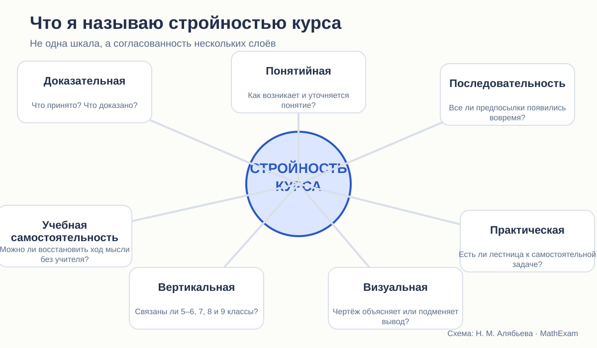

Исследовательский цикл
Стройность школьного курса геометрии: планиметрия 7–9 классов
Сравнительный аудит того, как устроена школьная планиметрия в учебниках Л. С. Атанасяна, А. В. Погорелова и А. Г. Мерзляка: определения, доказательства, порядок тем, система задач и обучение самостоятельному рассуждению.
Основной предмет этого цикла — планиметрия, то есть раздел геометрии, изучающий фигуры на плоскости. Именно планиметрическая часть составляет ядро курса 7–9 классов и даёт школьнику первый опыт систематической доказательной математики. Элементы стереометрии, включённые в некоторые из рассматриваемых учебников, отмечаются отдельно.
Меня интересует не вопрос «какой учебник лучше вообще», а более полезный: где именно каждый курс строит математическую систему особенно хорошо, а где связь между основаниями, доказательством и практикой ослабевает.

Все статьи цикла
Что значит «стройный курс геометрии»
Критерии, по которым можно сравнивать учебники, не сводя всё к вкусу и привычке.
Читать статью →Что ученик приносит в 7 класс
Как наглядная геометрия Виленкина готовит систематический курс — и чего от неё нельзя требовать.
Читать статью →Определение, аксиома, теорема: правила игры в школьной планиметрии
Три способа объяснить школьнику правила доказательной геометрии.
Читать статью →Наложение, перегибание и движение
Как меняется смысл равенства фигур от бумажной модели до преобразования плоскости.
Читать статью →Первый признак равенства треугольников
Построчный разбор доказательств у Атанасяна, Погорелова и Мерзляка.
Читать статью →Как учебники планиметрии учат доказывать
Готовое доказательство, самостоятельное рассуждение и ступени между ними.
Читать статью →Необходимо и достаточно
Почему язык прямой и обратной теоремы должен появляться не эпизодом, а работать во всём курсе.
Читать статью →Система задач по планиметрии: как теория превращается в умение
Сравнение систем задач: уровни, ключевые задачи, практические работы и перенос.
Читать статью →Чертёж в планиметрии: помощник или источник ложной очевидности
Что можно увидеть на рисунке и что всё равно требуется доказать.
Читать статью →Три архитектуры школьного курса планиметрии
Макроструктура планиметрической части курсов Атанасяна, Погорелова и Мерзляка.
Читать статью →Базовый и углублённый Мерзляк
Что меняется при настоящем углублении: содержание, методы и длина доказательных цепочек.
Читать статью →Как собрать более стройный курс школьной планиметрии
Что стоит сохранить у трёх авторов и какие разрывы придётся устранить.
Читать статью →Как читать серию
Можно начинать с любой конкретной темы: наложение, первый признак, задачи, чертёж.
Первые три статьи задают критерии и язык всего аудита.
Статьи 10–12 переходят от критики учебников к проектированию новой структуры.
Корпус учебников
Л. С. Атанасян и соавторы
«Математика. Геометрия. 7–9 классы. Базовый уровень», 14-е переработанное издание, 2023.
Официальная страница учебника →А. В. Погорелов
«Геометрия. 7–9 классы», 11-е стереотипное издание, 2022.
Официальная страница учебника →А. Г. Мерзляк, В. Б. Полонский, М. С. Якир
Базовая линия для 7, 8 и 9 классов.
Официальный каталог линии →А. Г. Мерзляк, В. М. Поляков
Углублённая линия для 7, 8 и 9 классов — внутренний контроль глубины курса.
Официальная страница линии →Принцип работы с иллюстрациями
В статьях используются небольшие фрагменты страниц, когда без них невозможно увидеть устройство доказательства, формулировку или расположение материала. Под каждым фрагментом указаны авторы, издание и страница. Полные копии учебников на сайте не размещаются; ссылки ведут на официальные страницы издательства.